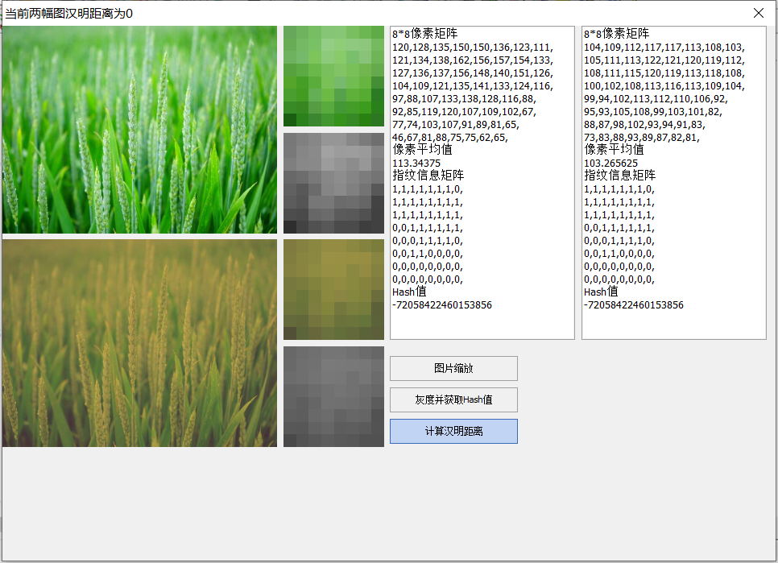
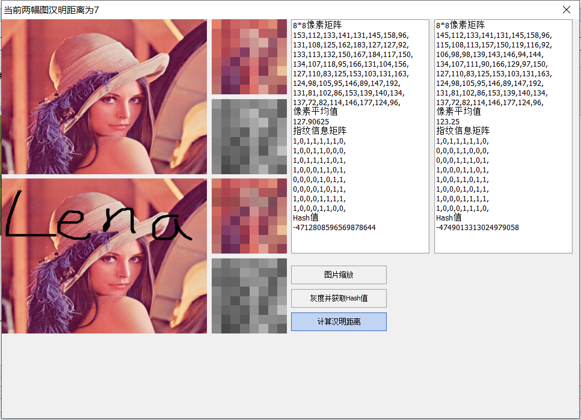
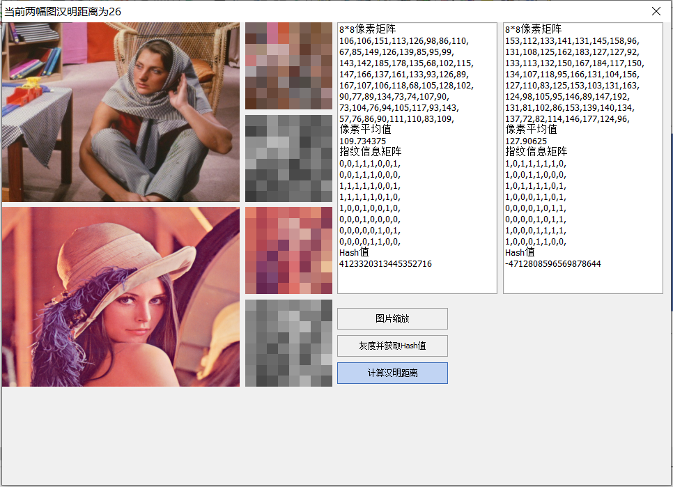

Hash算法有三种，分别为平均哈希算法(aHash)、感知哈希算法你(pHash)和差异哈哈希算法(dHash)。
针对以上三种的Hash算法详解见博客园文章
https://www.cnblogs.com/Kalafinaian/p/11260808.html
本文实现针对平均哈希算法；
平均哈希算法是三种Hash算法中最简单的一种，它通过下面几个步骤来获得图片的Hash值，这几个步骤分别是(1) 缩放图片；（2）转灰度图; (3) 算像素均值；（4）根据相似均值计算指纹。具体算法如下所示:
表1 aHash得到图片Hash值地算法
|
缩放图片 |
输入图片大小尺寸各异，为了统一图片的输入，统一将图片尺寸缩放为8*8，一共得到了64个像素点。 |
|
转灰度图 |
输入图片有些为单通道灰度图，有些RGB三通道彩色图，有些为RGBA四通道彩色图。也为了统一下一步输入标准，将非单通道图片都转为单通道灰度图。 其中RGB三通道转单通道算法有下面几种: 1.浮点算法：Gray=R0.3+G0.59+B0.11 2.整数方法：Gray=(R30+G59+B11)/100 3.移位方法：Gray =(R76+G151+B*28)>>8; 4.平均值法：Gray=（R+G+B）/3; 本Demo采用的该方法 5.仅取绿色：Gray=G； |
| 算像素均值 |
通过上一步可得一个8x8的整数矩阵G，计算这个矩阵中所有元素的平均值，假设其值为a |
|
据像素均值计算指纹 |
初始化输入图片的ahash = "" 从左到右一行一行地遍历矩阵G每一个像素如果第i行j列元素G(i,j) >= a，则ahash += "1"如果第i行j列元素G(i,j) <a， 则ahash += "0" |
得到图片的ahash值后，比较两张图片ahash值的汉明距离，通常认为汉明距离小于10的一组图片为相似图片。
Demo 界面/



获取aHash函数如下：
function TForm1.GetHash(src: TBitmap; iType: Integer): Int64;
var
p: PByteArray;
bmp: TBitmap;
x, y: Integer;
gray, sum: Integer;
ct: array[0..7, 0..7] of Byte;
avg: Single;
ret: Int64;
begin
ret := 0;
case iType of
0: // aHash 平均哈希算法
begin
bmp := TBitmap.Create;
try
bmp.Assign(src);
bmp.Width := 8;
bmp.Height := 8;
bmp.PixelFormat := pf24bit;
sum := 0;
for y := 0 to 7 do
begin
p := bmp.ScanLine[y];
for x := 0 to 7 do
begin
//转灰度图 平均值法
gray := (p[3 * x + 2] + p[3 * x + 1] + p[3 * x]) div 3;
ct[y, x] := gray;
sum := sum + gray;
end;
end;
avg := sum/64;
for y := 0 to 7 do
for x := 0 to 7 do
ret := ret shl 1 or Ord(ct[y, x] > avg);
finally
bmp.Free;
end;
end;
1: // pHash 感知哈希算法
begin
end;
2: // dHash 差异哈希算法
begin
end;
end;
Result := ret;
end;
计算汉明距离函数：原理参考：https://blog.csdn.net/u013243347/article/details/52220551
function TForm1.Hamming(Hash1, Hash2: Int64): Integer;
var
A: Int64;
begin
Result := 0;
A := Hash1 xor Hash2;
while A<>0 do
begin
A := A and (A-1);
Inc(Result);
end;
end;
Demo 下载地址：https://download.csdn.net/download/huffmanlepand/11833317